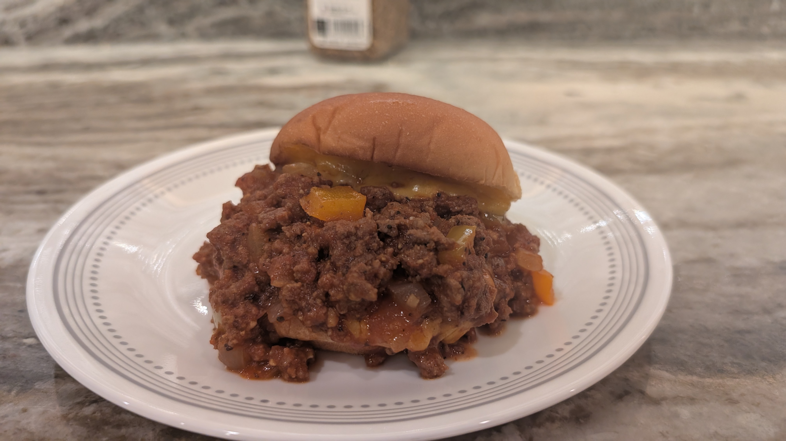

Home
Almond Pound Cake
Chocolate Peanut Butter Bars
Peaches and Cream French Toast
Pimiento Cheese
Sloppy Joes
Waffles
Sources
This recipe makes a great dinner. In my family, we call them "Sloppy Seth's."

Sloppy Joes
1 1/3 Lbs Ground Beef
2 TBSP Olive Oil
1/2 Onion (Red or White)
1/2 Bell Pepper
1 1/2 TBSP Grilled Seasoning Blend
1 TBSP Sugar
1 TBSP Brown Sugar
2 TBSP Worcestershire Sauce
2 Cup (16 oz) Tomato Sauce
4 Hamburger Buns
Place the Ground Beef in a pan over Medium-High
At the same time, in a seperate pan, add Olive Oil and then add your Onion and Bell Pepper and cook on Medium
In a small bowl, combine Tomato Sauce, Grill Seasoning Blend, Sugar, Brown Sugar, and Worcestershire Sauce
Pour your veggies into your ground beef once both are cooked
Once you have combined your Beef and Veggies, add your Sauce
Mix the sauce in, and then turn the heat down to low and let it simmer for 10 minutes, stirring occasionally
Put your Sloppy Joes on a Hamburger Bun and Enjoy!